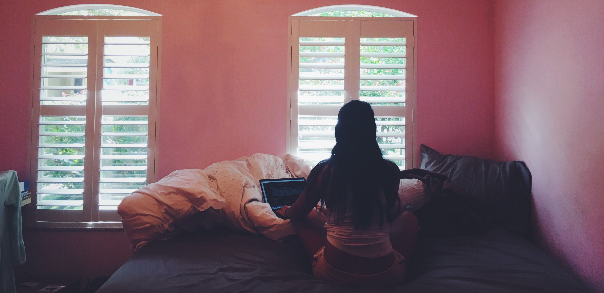

This website
-
...was my favorite programming project. To think that this website was created with just some files of code blows my mind, and I hope that never changes. There's so much left for me to uncover in the world of computer science - and it truly is a whole other world, with its own languages, laws, and class divisions. This is my third time creating a website and each time I do, I get a better grasp on the concepts of HTML and CSS and a better idea of what my ideal website looks like. This time around I went for a minimalist and functional design. I got to call the shots because this website was all for me. Being able to research and then implement all of my "what if's" was beyond satisfying. I finished most of the website within 5 hours, but it was the extra efforts like getting the menu bar to stay at the top of the page, learning responsive design and creating hover images, where I had the most fun.
And now I not only have more experience in web design, but I also have my own blog. For me, this website serves as an outlet, a place for reflection, a reason to take more pictures, and something I can call my own. Like all art, it started as an idea, but with a little inspiration and a lot of research, it became something interesting enough for you to be reading right now. This summer I hope to feed my inner artist my creating and sharing everything. I want to write my own songs, program an organizational app, cook new dishes, design unique outfits, and write pieces just like this one. Here's to a summer of creation.